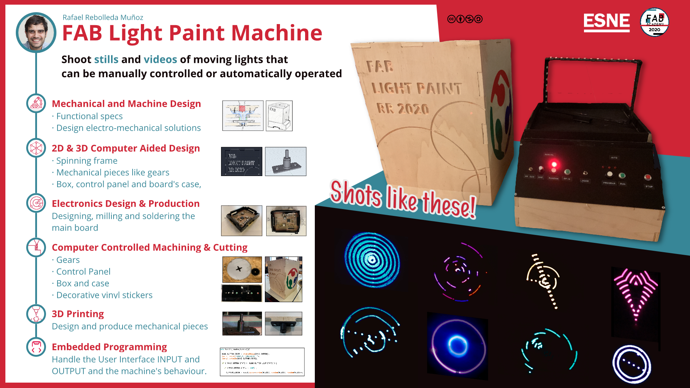

<!DOCTYPE html>
<html lang="en"></html>
<head>
  <meta charset="utf-8">
  <meta content="IE=edge" http-equiv="X-UA-Compatible">
  <meta content="width=device-width, initial-scale=1" name="viewport">
  <title> Rafael Rebolleda — Fab Academy 2020 Documentation</title>
  <!-- Google Fonts-->
  <link rel="stylesheet" href="https://fonts.googleapis.com/css?family=Catamaran&amp;display=swap">
  <link rel="stylesheet" href="../css/main.css">
</head>
<body> 
  <nav>
    <header>
      <ul>
        <li>Rafael Rebolleda</li>
        <li>ESNE + LEON</li>
        <li>Madrid, Spain</li>
      </ul>
      <p class="bio">Human Centric Research & Innovation consultant and professor. Also looking for PhD opportunities!</p>
    </header>
    <ol>
      <li><a class="red" href="../">About me</a></li>
      <li><a class="blue" href="../FP/">Final Project</a></li>
      <li><a class="blue" href="../DEV/">Project Development</a></li>
    </ol>
    <h1>Assignments</h1>
    <ol> 
      <li><a href="../W1/">Principles & Practices</a></li>
      <li><a href="../W2/">Computer Aided Design</a></li>
      <li><a href="../W3/">Computer Controlled Cutting</a></li>
      <li><a href="../W4/">Electronics Production</a></li>
      <li><a href="../W5/">3D Scan + Printing</a></li>
      <li><a href="../W6/">Electronics Design</a></li>
      <li><a href="../W7/">Computer Controlled Machining</a></li>
    </ol>
  </nav>
  <main>
    <h1>Final Project</h1>
    <h2>Summary Slide</h2>
    <h2>Summary Video</h2>
    <p><iframe src="https://player.vimeo.com/video/446303444" width="640" height="480" frameborder="0" allow="autoplay; fullscreen" allowfullscreen></iframe></p>
    <h3>What does it do?</h3>
    <h3>Who’s done what beforehand?</h3>
    <h3>What did you design?</h3>
    <h3>What materials and components were used?</h3>
    <h3>Where did they come from?</h3>
    <h3>How much did they cost?</h3>
    <h3>What parts and systems were made?</h3>
    <h3>What processes were used?</h3>
    <h3>What questions were answered?</h3>
    <h3>What worked? What didn’t?</h3>
    <h3>How was it evaluated?</h3>
    <h3>What are the implications?    </h3>
  </main>
</body>